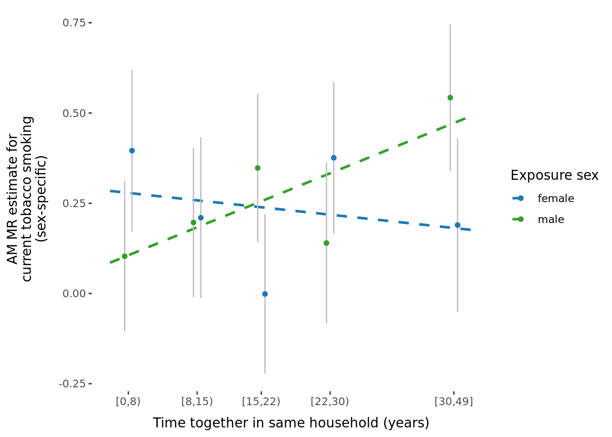
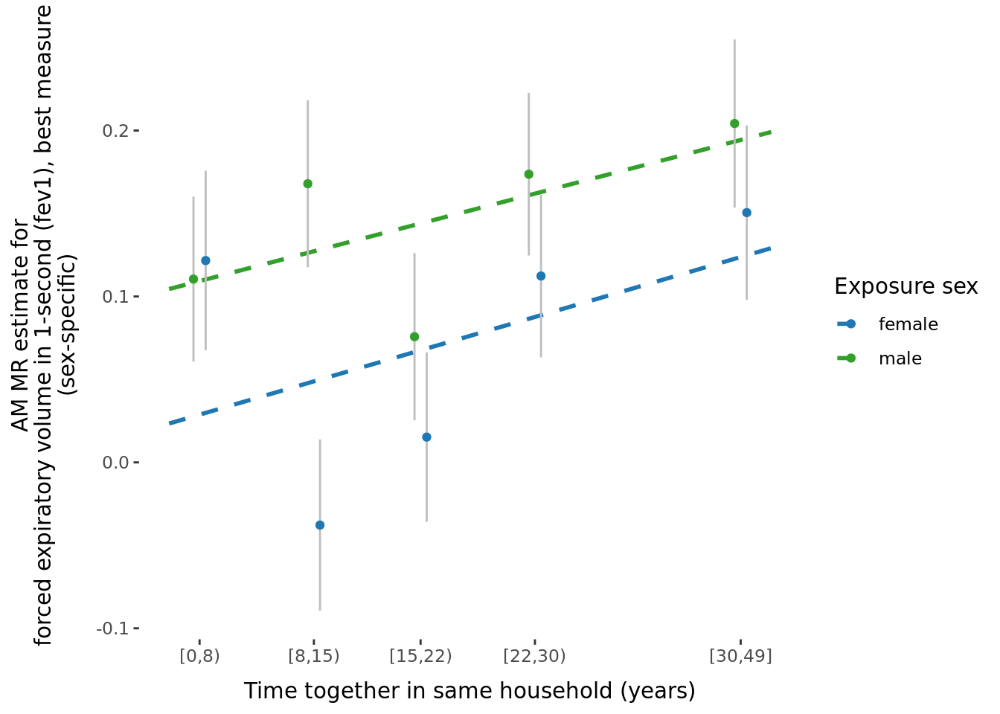
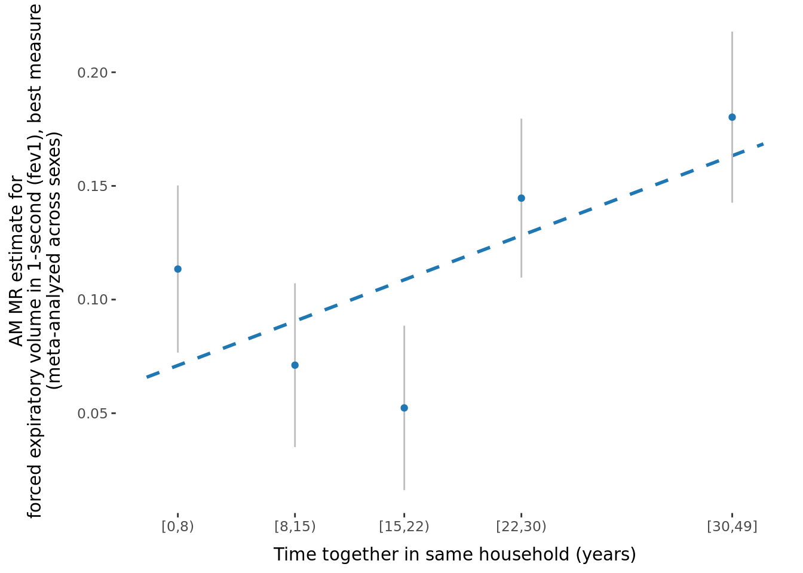
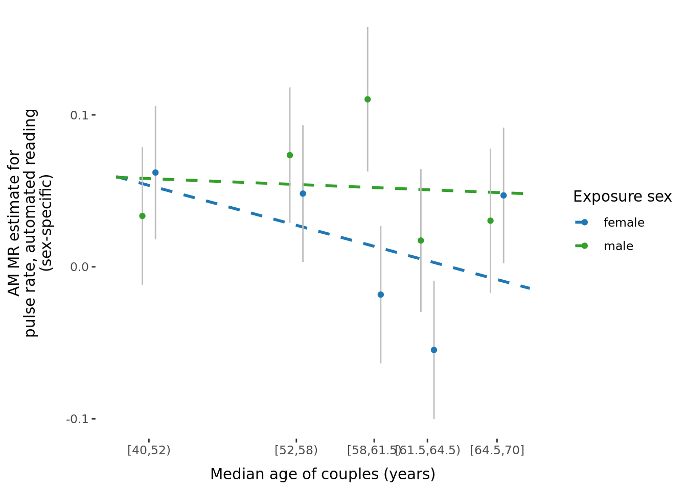
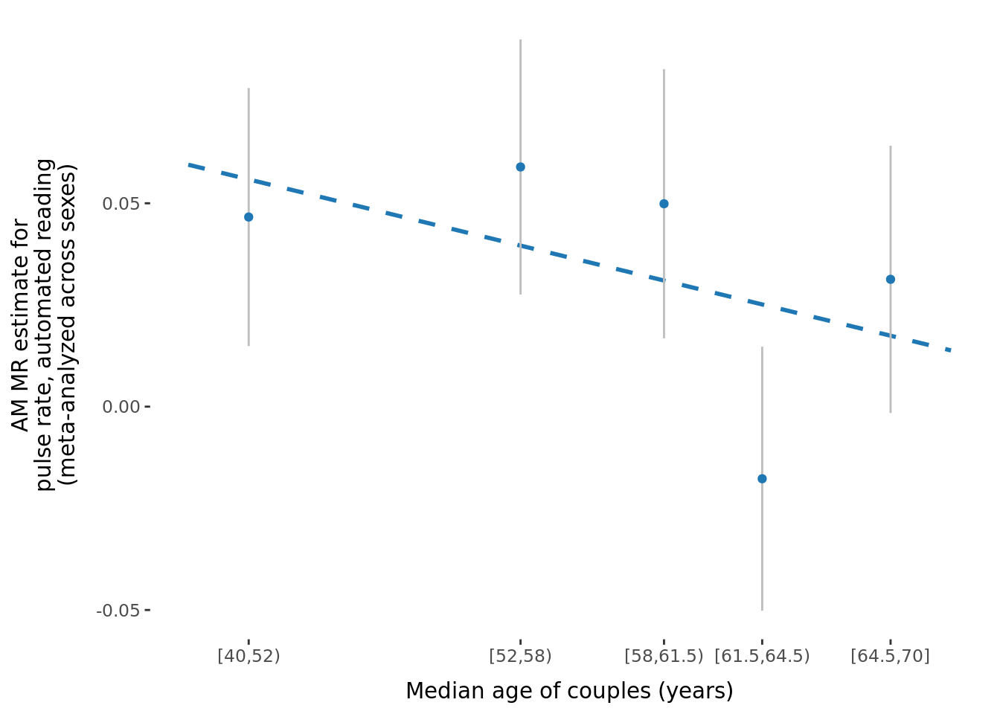

Last updated: 2022-04-20
Checks: 7 0
Knit directory: proxyMR/
This reproducible R Markdown analysis was created with workflowr (version 1.6.2). The Checks tab describes the reproducibility checks that were applied when the results were created. The Past versions tab lists the development history.
Great! Since the R Markdown file has been committed to the Git repository, you know the exact version of the code that produced these results.
Great job! The global environment was empty. Objects defined in the global environment can affect the analysis in your R Markdown file in unknown ways. For reproduciblity it's best to always run the code in an empty environment.
The command set.seed(20210602) was run prior to running the code in the R Markdown file. Setting a seed ensures that any results that rely on randomness, e.g. subsampling or permutations, are reproducible.
Great job! Recording the operating system, R version, and package versions is critical for reproducibility.
Nice! There were no cached chunks for this analysis, so you can be confident that you successfully produced the results during this run.
Great job! Using relative paths to the files within your workflowr project makes it easier to run your code on other machines.
Great! You are using Git for version control. Tracking code development and connecting the code version to the results is critical for reproducibility.
The results in this page were generated with repository version 978309b. See the Past versions tab to see a history of the changes made to the R Markdown and HTML files.
Note that you need to be careful to ensure that all relevant files for the analysis have been committed to Git prior to generating the results (you can use wflow_publish or wflow_git_commit). workflowr only checks the R Markdown file, but you know if there are other scripts or data files that it depends on. Below is the status of the Git repository when the results were generated:
Ignored files:
Ignored: .Rhistory
Ignored: .Rproj.user/
Ignored: _targets/
Ignored: analysis/_site.yml_cp
Ignored: analysis/bgenie_GWAS/
Ignored: analysis/data_setup/
Ignored: analysis/download_Neale_list.csv
Ignored: analysis/process_Neale.out
Ignored: analysis/traitMR/
Ignored: data/Neale_SGG_directory_11_02_2022.csv
Ignored: data/Neale_SGG_directory_12_07_2021.csv
Ignored: data/Neale_SGG_directory_15_07_2021.csv
Ignored: data/PHESANT_file_directory_05_10_2021.txt
Ignored: data/UKBB_pheno_directory_05_10_2021.csv
Ignored: data/processed/
Ignored: data/raw/
Ignored: output/figures/
Ignored: output/tables/traitMR/
Ignored: proxyMR_comparison.RData
Ignored: proxyMR_figure_data.RData
Ignored: proxymr_100_clustermq.out
Ignored: proxymr_101_clustermq.out
Ignored: proxymr_102_clustermq.out
Ignored: proxymr_103_clustermq.out
Ignored: proxymr_104_clustermq.out
Ignored: proxymr_105_clustermq.out
Ignored: proxymr_106_clustermq.out
Ignored: proxymr_107_clustermq.out
Ignored: proxymr_108_clustermq.out
Ignored: proxymr_109_clustermq.out
Ignored: proxymr_10_clustermq.out
Ignored: proxymr_110_clustermq.out
Ignored: proxymr_111_clustermq.out
Ignored: proxymr_112_clustermq.out
Ignored: proxymr_113_clustermq.out
Ignored: proxymr_114_clustermq.out
Ignored: proxymr_115_clustermq.out
Ignored: proxymr_116_clustermq.out
Ignored: proxymr_117_clustermq.out
Ignored: proxymr_118_clustermq.out
Ignored: proxymr_119_clustermq.out
Ignored: proxymr_11_clustermq.out
Ignored: proxymr_120_clustermq.out
Ignored: proxymr_121_clustermq.out
Ignored: proxymr_122_clustermq.out
Ignored: proxymr_123_clustermq.out
Ignored: proxymr_124_clustermq.out
Ignored: proxymr_125_clustermq.out
Ignored: proxymr_126_clustermq.out
Ignored: proxymr_127_clustermq.out
Ignored: proxymr_128_clustermq.out
Ignored: proxymr_129_clustermq.out
Ignored: proxymr_12_clustermq.out
Ignored: proxymr_130_clustermq.out
Ignored: proxymr_131_clustermq.out
Ignored: proxymr_132_clustermq.out
Ignored: proxymr_133_clustermq.out
Ignored: proxymr_134_clustermq.out
Ignored: proxymr_135_clustermq.out
Ignored: proxymr_136_clustermq.out
Ignored: proxymr_137_clustermq.out
Ignored: proxymr_138_clustermq.out
Ignored: proxymr_139_clustermq.out
Ignored: proxymr_13_clustermq.out
Ignored: proxymr_140_clustermq.out
Ignored: proxymr_14_clustermq.out
Ignored: proxymr_15_clustermq.out
Ignored: proxymr_16_clustermq.out
Ignored: proxymr_17_clustermq.out
Ignored: proxymr_18_clustermq.out
Ignored: proxymr_19_clustermq.out
Ignored: proxymr_1_clustermq.out
Ignored: proxymr_20_clustermq.out
Ignored: proxymr_21_clustermq.out
Ignored: proxymr_22_clustermq.out
Ignored: proxymr_23_clustermq.out
Ignored: proxymr_24_clustermq.out
Ignored: proxymr_25_clustermq.out
Ignored: proxymr_26_clustermq.out
Ignored: proxymr_27_clustermq.out
Ignored: proxymr_28_clustermq.out
Ignored: proxymr_29_clustermq.out
Ignored: proxymr_2_clustermq.out
Ignored: proxymr_30_clustermq.out
Ignored: proxymr_31_clustermq.out
Ignored: proxymr_32_clustermq.out
Ignored: proxymr_33_clustermq.out
Ignored: proxymr_34_clustermq.out
Ignored: proxymr_35_clustermq.out
Ignored: proxymr_36_clustermq.out
Ignored: proxymr_37_clustermq.out
Ignored: proxymr_38_clustermq.out
Ignored: proxymr_39_clustermq.out
Ignored: proxymr_3_clustermq.out
Ignored: proxymr_40_clustermq.out
Ignored: proxymr_41_clustermq.out
Ignored: proxymr_42_clustermq.out
Ignored: proxymr_43_clustermq.out
Ignored: proxymr_44_clustermq.out
Ignored: proxymr_45_clustermq.out
Ignored: proxymr_46_clustermq.out
Ignored: proxymr_47_clustermq.out
Ignored: proxymr_48_clustermq.out
Ignored: proxymr_49_clustermq.out
Ignored: proxymr_4_clustermq.out
Ignored: proxymr_50_clustermq.out
Ignored: proxymr_51_clustermq.out
Ignored: proxymr_52_clustermq.out
Ignored: proxymr_53_clustermq.out
Ignored: proxymr_54_clustermq.out
Ignored: proxymr_55_clustermq.out
Ignored: proxymr_56_clustermq.out
Ignored: proxymr_57_clustermq.out
Ignored: proxymr_58_clustermq.out
Ignored: proxymr_59_clustermq.out
Ignored: proxymr_5_clustermq.out
Ignored: proxymr_60_clustermq.out
Ignored: proxymr_61_clustermq.out
Ignored: proxymr_62_clustermq.out
Ignored: proxymr_63_clustermq.out
Ignored: proxymr_64_clustermq.out
Ignored: proxymr_65_clustermq.out
Ignored: proxymr_66_clustermq.out
Ignored: proxymr_67_clustermq.out
Ignored: proxymr_68_clustermq.out
Ignored: proxymr_69_clustermq.out
Ignored: proxymr_6_clustermq.out
Ignored: proxymr_70_clustermq.out
Ignored: proxymr_71_clustermq.out
Ignored: proxymr_72_clustermq.out
Ignored: proxymr_73_clustermq.out
Ignored: proxymr_74_clustermq.out
Ignored: proxymr_75_clustermq.out
Ignored: proxymr_76_clustermq.out
Ignored: proxymr_77_clustermq.out
Ignored: proxymr_78_clustermq.out
Ignored: proxymr_79_clustermq.out
Ignored: proxymr_7_clustermq.out
Ignored: proxymr_80_clustermq.out
Ignored: proxymr_81_clustermq.out
Ignored: proxymr_82_clustermq.out
Ignored: proxymr_83_clustermq.out
Ignored: proxymr_84_clustermq.out
Ignored: proxymr_85_clustermq.out
Ignored: proxymr_86_clustermq.out
Ignored: proxymr_87_clustermq.out
Ignored: proxymr_88_clustermq.out
Ignored: proxymr_89_clustermq.out
Ignored: proxymr_8_clustermq.out
Ignored: proxymr_90_clustermq.out
Ignored: proxymr_91_clustermq.out
Ignored: proxymr_92_clustermq.out
Ignored: proxymr_93_clustermq.out
Ignored: proxymr_94_clustermq.out
Ignored: proxymr_95_clustermq.out
Ignored: proxymr_96_clustermq.out
Ignored: proxymr_97_clustermq.out
Ignored: proxymr_98_clustermq.out
Ignored: proxymr_99_clustermq.out
Ignored: proxymr_9_clustermq.out
Ignored: renv/library/
Ignored: renv/staging/
Unstaged changes:
Modified: output/tables/household_correlations.final_filter.csv
Modified: renv.lock
Note that any generated files, e.g. HTML, png, CSS, etc., are not included in this status report because it is ok for generated content to have uncommitted changes.
These are the previous versions of the repository in which changes were made to the R Markdown (analysis/AM_MR_summary.Rmd) and HTML (docs/AM_MR_summary.html) files. If you've configured a remote Git repository (see ?wflow_git_remote), click on the hyperlinks in the table below to view the files as they were in that past version.
| File | Version | Author | Date | Message |
|---|---|---|---|---|
| Rmd | 978309b | Jenny Sjaarda | 2022-04-20 | wflow_publish("analysis/AM_MR_summary.Rmd") |
| html | 9afe690 | Jenny Sjaarda | 2021-09-15 | Build site. |
| Rmd | e8da48b | Jenny Sjaarda | 2021-09-15 | add AM MR summary |
| Rmd | 103c1b5 | jennysjaarda | 2021-09-15 | add AM MR summary |
For certain analyses it is worth only looking at MR results between couples where the exposure trait is the same as the outcome trait. We've called these analyses assortative mating MR (AM MR).
| Version | Author | Date |
|---|---|---|
| 529020f | jennysjaarda | 2021-09-24 |
IVW_meta_beta and IVW_meta_pval corresponds to the beta and p-value of the meta-analyzed MR across sexes, respectively (i.e. MR estimates were computed in each sex-seperately using sex-specific SNP-exposure and SNP-outcome results and then meta-analyzed).0.05/66), identified 64 significant AM MR relationships (see below on details for how number of effective tests was obtained).A note on multiple testing adjustment:
0.05/29), 0 traits showed significant differences amongst sexes.p < 0.05 (of which there are 15).
Paired t-test
data: nominally_sig_sex_differences$IVW_beta_male and nominally_sig_sex_differences$IVW_beta_female
t = -2.8203, df = 14, p-value = 0.01362
alternative hypothesis: true difference in means is not equal to 0
95 percent confidence interval:
-0.20384885 -0.02773588
sample estimates:
mean of the differences
-0.1157924 In general, found that female estimates are on average larger than males (result of the paired t-test shown below).
Paired t-test
data: nominally_sig_sex_differences$IVW_beta_male and nominally_sig_sex_differences$IVW_beta_female
t = -2.8203, df = 14, p-value = 0.01362
alternative hypothesis: true difference in means is not equal to 0
95 percent confidence interval:
-0.20384885 -0.02773588
sample estimates:
mean of the differences
-0.1157924 time_together_even_bins) estimated using time at household variable, and median age (age_even_bins).age or time together) versus the bin-specific MR estimate.The number of significant q-statistics significant after multiple hypothesis testing (p < 0.05/29 = 0.0017241) in each group was:
All results are displayed below (sort by Q_pval to view significant results).
Slopes were calculated by estimating the beta-coefficient of a linear regression between MR estimate within each bin (dependent variable) and median bin (independent variable, either age or time at same household). Linear models were run both unweighted and weighted for the by the inverse of the SE of the MR estimate.
The number of significant trends (\(\beta\) estimates from the model: \(\alpha_{bin} \sim median_{bin}\)) significant after multiple hypothesis testing (p < 0.05/29 = 0.0017241) in each group was:
All results are displayed below (sort by various p-values to view significant results).
A few figures of interest are shown below.
| Version | Author | Date |
|---|---|---|
| 9afe690 | Jenny Sjaarda | 2021-09-15 |
| Version | Author | Date |
|---|---|---|
| 9afe690 | Jenny Sjaarda | 2021-09-15 |

| Version | Author | Date |
|---|---|---|
| 9afe690 | Jenny Sjaarda | 2021-09-15 |
| Version | Author | Date |
|---|---|---|
| 9afe690 | Jenny Sjaarda | 2021-09-15 |

| Version | Author | Date |
|---|---|---|
| 9afe690 | Jenny Sjaarda | 2021-09-15 |

| Version | Author | Date |
|---|---|---|
| 9afe690 | Jenny Sjaarda | 2021-09-15 |

| Version | Author | Date |
|---|---|---|
| 9afe690 | Jenny Sjaarda | 2021-09-15 |

| Version | Author | Date |
|---|---|---|
| 9afe690 | Jenny Sjaarda | 2021-09-15 |
sessionInfo()R version 4.1.0 (2021-05-18)
Platform: x86_64-pc-linux-gnu (64-bit)
Running under: CentOS Linux 7 (Core)
Matrix products: default
BLAS: /data/sgg2/jenny/bin/R-4.1.0/lib64/R/lib/libRblas.so
LAPACK: /data/sgg2/jenny/bin/R-4.1.0/lib64/R/lib/libRlapack.so
locale:
[1] en_CA.UTF-8
attached base packages:
[1] stats graphics grDevices datasets utils methods base
other attached packages:
[1] knitr_1.33 DT_0.18.1 forcats_0.5.1 stringr_1.4.0
[5] dplyr_1.0.7 purrr_0.3.4 readr_1.4.0 tidyr_1.1.3
[9] tibble_3.1.2 ggplot2_3.3.4 tidyverse_1.3.1 targets_0.5.0.9001
[13] workflowr_1.6.2
loaded via a namespace (and not attached):
[1] httr_1.4.2 sass_0.4.0 jsonlite_1.7.2 splines_4.1.0
[5] modelr_0.1.8 bslib_0.3.0 assertthat_0.2.1 highr_0.9
[9] renv_0.13.2-62 cellranger_1.1.0 yaml_2.2.1 lattice_0.20-44
[13] pillar_1.6.1 backports_1.2.1 glue_1.4.2 digest_0.6.27
[17] promises_1.2.0.1 rvest_1.0.0 colorspace_2.0-1 Matrix_1.3-3
[21] cowplot_1.1.1 htmltools_0.5.2 httpuv_1.6.1 pkgconfig_2.0.3
[25] broom_0.7.7 haven_2.4.1 scales_1.1.1 processx_3.5.2
[29] whisker_0.4 later_1.2.0 git2r_0.28.0 mgcv_1.8-35
[33] farver_2.1.0 generics_0.1.0 ellipsis_0.3.2 withr_2.4.2
[37] cli_2.5.0 magrittr_2.0.1 crayon_1.4.1 readxl_1.3.1
[41] evaluate_0.14 ps_1.6.0 fs_1.5.0 fansi_0.5.0
[45] nlme_3.1-152 xml2_1.3.2 tools_4.1.0 data.table_1.14.0
[49] hms_1.1.0 lifecycle_1.0.0 munsell_0.5.0 reprex_2.0.0
[53] callr_3.7.0 compiler_4.1.0 jquerylib_0.1.4 rlang_0.4.11
[57] grid_4.1.0 rstudioapi_0.13 htmlwidgets_1.5.3 crosstalk_1.1.1
[61] igraph_1.2.6 labeling_0.4.2 rmarkdown_2.11.2 gtable_0.3.0
[65] codetools_0.2-18 DBI_1.1.1 R6_2.5.0 lubridate_1.7.10
[69] fastmap_1.1.0 utf8_1.2.1 rprojroot_2.0.2 stringi_1.6.2
[73] Rcpp_1.0.6 vctrs_0.3.8 dbplyr_2.1.1 tidyselect_1.1.1
[77] xfun_0.24